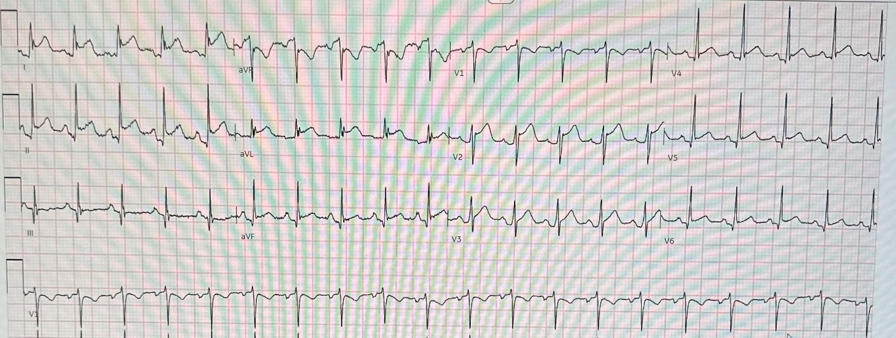
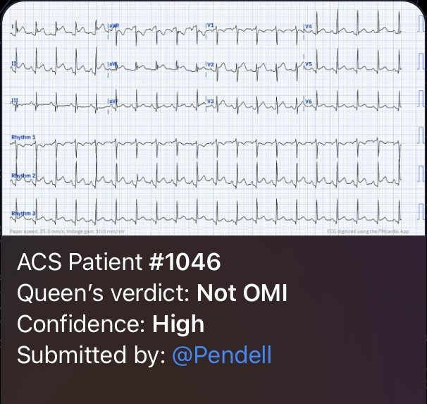
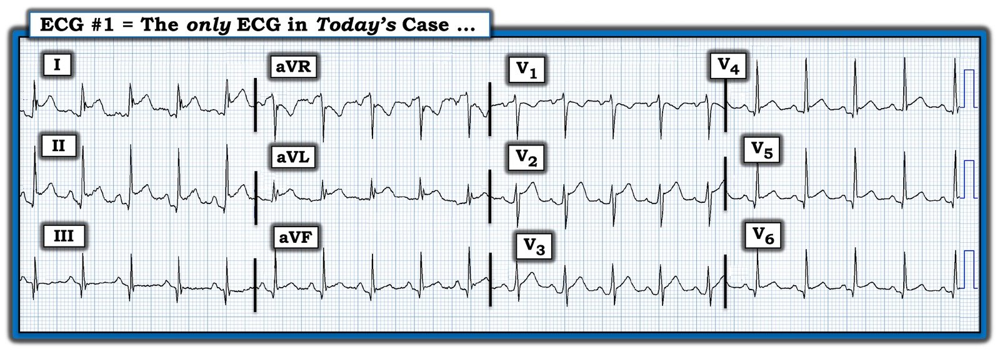
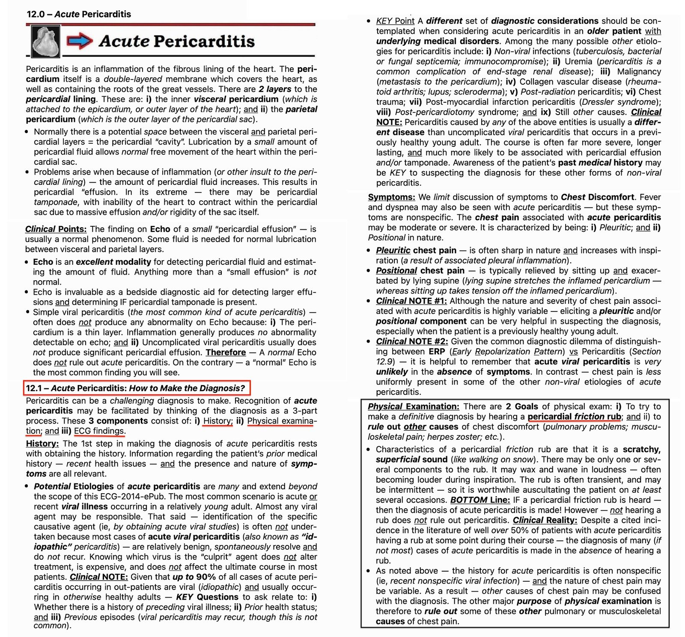
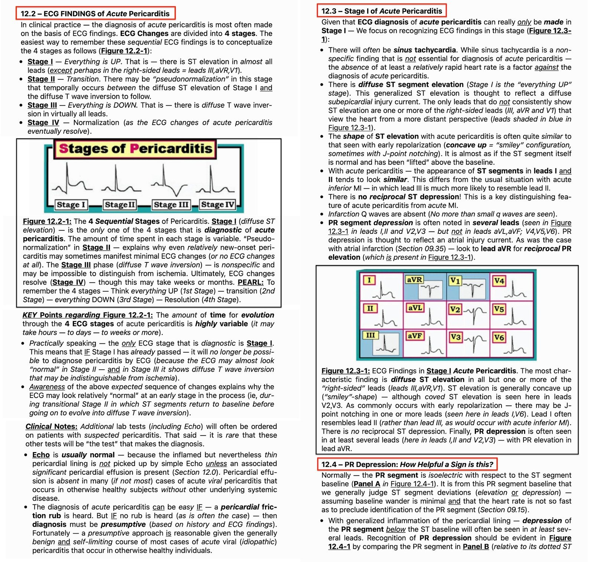
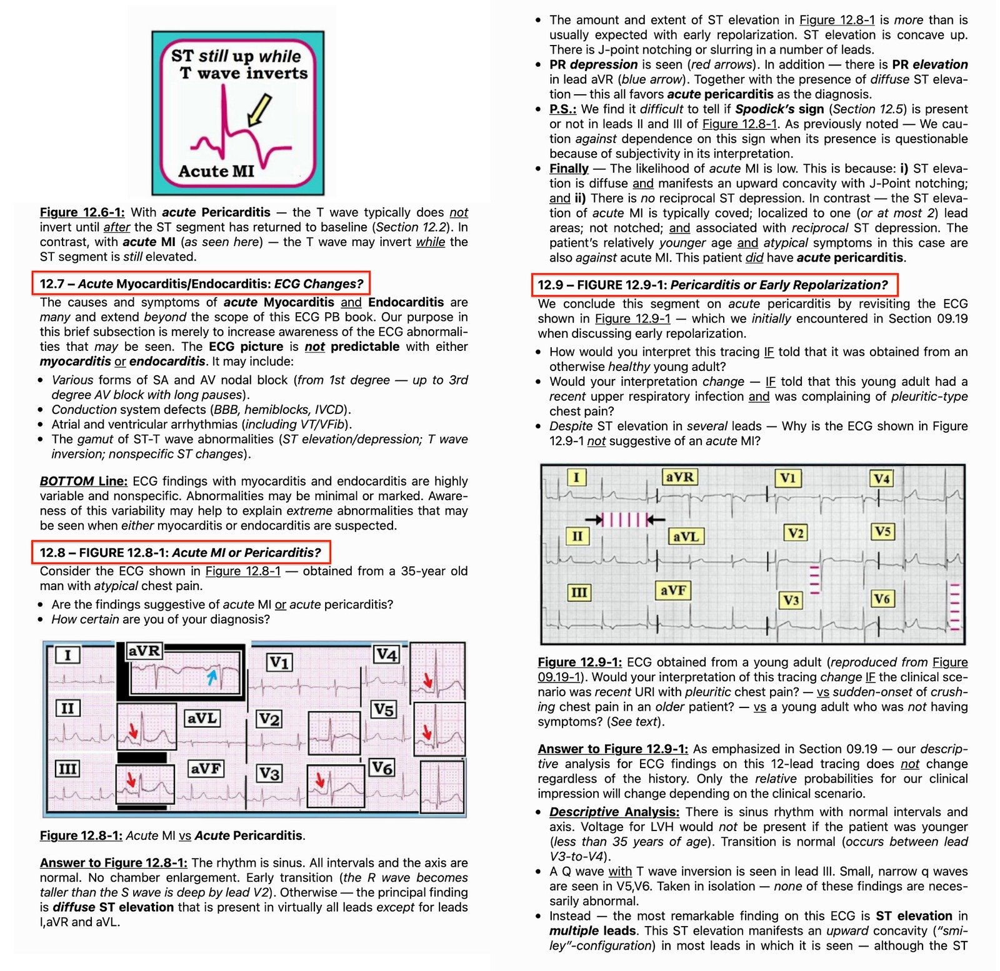
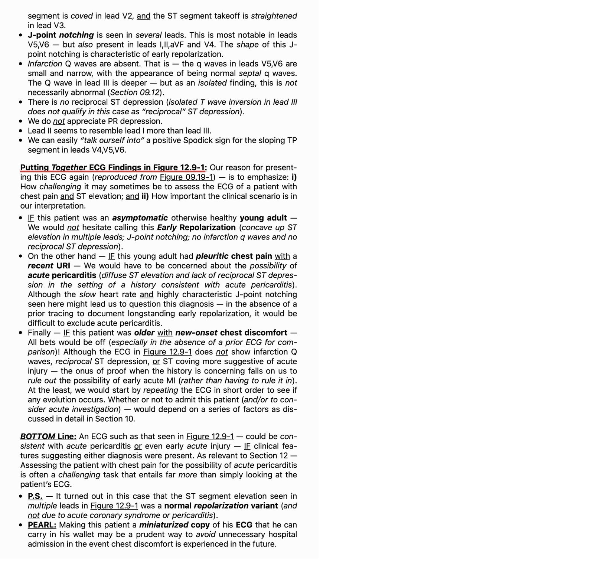

16/05/2023 — Một nam giới cuối độ tuổi 30 bị đau ngực cấp và ST chênh lên
Bản dịch tiếng Việt của bài "A man in his late 30s with acute chest pain and ST elevation" – Dr. Smith’s ECG Blog. Giữ nguyên toàn bộ 9 hình ảnh của bản gốc.
Do Dan Singer MD gửi, Meyers viết, Smith biên tập
Một nam giới cuối độ tuổi 30 đến khám vì đau ngực cấp, các dấu hiệu sinh tồn bình thường ngoại trừ nhịp nhanh khoảng 115 lần/phút. Đây là điện tâm đồ lúc phân loại (triage) của anh ấy:


Dr. Singer gửi cho tôi bản ghi này chỉ kèm thông tin: “~40 tuổi, đau ngực cấp”. Tôi trả lời ngay: “ca giả hay đấy! Không phải OMI. Có điện tâm đồ cũ không? Ca này có khả năng đáng kể là viêm màng ngoài tim, hoặc đây có thể là điện tâm đồ nền của anh ấy.”
Bản ghi này rất dễ bị nhầm với OMI vùng trước bên kiểu dấu hiệu “Cờ Nam Phi” (South African Flag), với ST chênh lên (STE) ở I, aVL, V2. Nhưng điều quan trọng là không có ST chênh xuống (STD) soi gương ở III (điều thường được dự đoán nếu STE ở aVL phản ánh nhồi máu xuyên thành cấp). Ngoài ra, có sóng J nổi bật, rất đáng chú ý ở I và aVL. STD đáng kể ở aVR cho thấy một vectơ STE lan tỏa rõ rệt, hướng tối đa về phía trái và xuống dưới.
Không có điện tâm đồ cũ.
Đây là kết quả diễn giải của Queen of Hearts:


Phòng thông tim (cath lab) đã được kích hoạt vì lo ngại STEMI.
Tôi không có nhiều chi tiết lâm sàng, nhưng khoa tim mạch đã hủy kích hoạt phòng thông tim vì một số lý do kết hợp.
Ba lần xét nghiệm troponin độ nhạy cao liên tiếp đều dưới giới hạn phát hiện.
Siêu âm tim chính thức cho thấy chức năng bình thường, không có rối loạn vận động thành (WMA) và không có tràn dịch.
Không chụp mạch vành.
Nhồi máu cơ tim cấp (AMI) đã được loại trừ, do đó OMI cũng được loại trừ.
Không có thông tin nào khác về kết cục. Đáng tiếc là tôi không nhận đủ thông tin để phân định bệnh nhân này có bị viêm màng ngoài tim hay không.
Tôi đã gửi ca này cho Dr. Smith và đây là phản hồi của ông:
“Có thể là viêm màng ngoài tim, nhưng chẩn đoán đó rất nguy hiểm. Đoạn PR chênh xuống nhiều và chênh lên ở aVR. Vectơ ST không điển hình cho OMI. Nhưng tôi vẫn sẽ thông tim trừ khi có đặc điểm lâm sàng rõ ràng nào đó chỉ về viêm màng ngoài tim. Có thêm dữ liệu gì ngoài “đau ngực” không? Đau kiểu màng phổi? Thay đổi theo tư thế? Có tiếng cọ? Sốt? Đau cấp?”
——-(Dr. Smith có một câu nói: “Bạn chẩn đoán viêm màng ngoài tim là tự chuốc lấy nguy hiểm — hoặc đẩy bệnh nhân vào nguy hiểm” — xem bình luận của Ken Grauer bên dưới). Lý do là OMI thường xuyên bị chẩn đoán nhầm thành viêm màng ngoài tim. Luôn luôn, yếu tố quan trọng nhất CHỐNG LẠI viêm màng ngoài tim là việc nó tương đối hiếm so với OMI. Xác suất tiền nghiệm có vai trò then chốt khi chẩn đoán OMI hay chẩn đoán bệnh giả OMI trên điện tâm đồ.
Như Ken nói bên dưới, nhịp nhanh không thường gặp trong OMI và làm biến dạng đoạn ST, vì vậy xử trí nhịp nhanh rồi ghi lại điện tâm đồ là một chiến lược tốt.
Những điểm cần học:
Đây là một trong rất nhiều ví dụ về dương tính giả theo tiêu chuẩn STEMI, có thể phân biệt được bởi chuyên gia và nay bởi AI như QOH.
Trong mô hình OMI, chúng tôi không chỉ tìm cách cải thiện việc phát hiện OMI STEMI âm tính (STEMI(-) OMI), mà còn giảm dương tính giả.
Chụp CT mạch vành cấp cứu có lẽ cũng có vai trò trong những ca như thế này. Hãy hình dung: các nhân viên y tế trong ca trên không đủ chắc chắn rằng bệnh nhân không bị OMI. Giống như với bất kỳ hội chứng tắc động mạch cấp nào khác (chẳng hạn nghi ngờ đột quỵ cấp do tắc mạch lớn), họ đưa bệnh nhân sang phòng bên cạnh và chụp CT mạch (vành) ngay, cho thấy các động mạch vành thông tốt. Siêu âm tim cấp cứu cũng xác nhận không có rối loạn vận động thành khu trú. Bằng cách này, họ không phải chọn giữa: A) chờ troponin tăng nhanh, qua đó bỏ lỡ lợi ích then chốt phụ thuộc thời gian đối với OMI, hoặc B) phí công một chuyến lên phòng thông tim.

==================================
BÌNH LUẬN CỦA TÔI, bởi KEN GRAUER, MD (16/5/2023):
==================================
Tôi bị cuốn hút bởi ca hôm nay — bởi những gì chúng ta không biết nhiều hơn là bởi những gì chúng ta biết.
- Như Dr. Meyers đã nói (và như thường xảy ra khi bệnh nhân không do một người trong chúng tôi trực tiếp xử trí) — thông tin được cung cấp cho chúng tôi rất hạn chế. Dù vậy — tôi vẫn cho rằng ca này rất có giá trị giảng dạy để bàn luận.
- Để dễ theo dõi, ở Hình 1 — tôi in lại điện tâm đồ duy nhất của ca hôm nay.


SUY NGHĨ CỦA TÔI về ca hôm nay:
Như Dr. Meyers đã nói — chúng ta không biết “đáp án cuối cùng” của ca hôm nay. Thay vào đó, tất cả những gì chúng ta biết là kết quả của một số xét nghiệm — và — rằng bệnh nhân này không bị tắc mạch vành cấp. Tôi xin nhấn mạnh những điểm sau:
- Bệnh nhân trong ca hôm nay là một nam giới cuối độ tuổi 30, đến khoa cấp cứu (ED) vì CP (Chest Pain — đau ngực) cấp — kèm — nhịp nhanh xoang tần số cao (khoảng ~115-120/phút). Việc đưa ra quyết định đúng là không kích hoạt phòng thông tim trong ca hôm nay là điều quan trọng — nhưng quan trọng không kém là bệnh nhân này không được cho xuất viện từ khoa cấp cứu cho đến khi tìm ra một lời giải thích nào đó cho cơn đau ngực và tình trạng nhịp nhanh xoang đáng kể của anh ấy. Vì đã làm 3 lần troponin và siêu âm tim chính thức trước khi cho xuất viện — người ta sẽ nghĩ rằng NẾU các bác sĩ điều trị đã tìm ra lời giải thích nào đó, thì điều đó hẳn đã được ghi lại trong hồ sơ.
- Như Dr. Meyers đã nói — điện tâm đồ ở Hình 1 không gợi ý OMI cấp. Lý do là ST chênh lên quá lan tỏa (tức là có ở 9/12 chuyển đạo!) — hình dạng ST chênh lên ở mọi nơi đều giống nhau (tức là dốc lên thoai thoải) — cùng với khía điểm J nổi bật (ở 4 chuyển đạo) — nhưng không có bất kỳ ST chênh xuống soi gương nào. Theo kết quả diễn giải bằng AI của QoH (Queen of Hearts) — hình ảnh điện tâm đồ này đơn giản là không giống một OMI cấp. Thay vào đó — nó giống nhiều hơn với một bệnh nhân có biến thể tái cực cộng thêm nhịp nhanh xoang — hoặc có thể giống viêm màng ngoài tim cấp. Dù hoàn toàn hợp lý khi kiểm chứng nhận định của chúng ta rằng điện tâm đồ #1 ít có khả năng là OMI (như đã làm bằng 3 lần troponin âm tính và siêu âm tim không có gì đáng chú ý) — thật khó hiểu vì sao các điện tâm đồ bổ sung lại không có trong hồ sơ.
- NẾU điện tâm đồ #1 là bản ghi đầu tiên của một biến cố tim cấp đang tiến triển — với cơn đau ngực mới khởi phát của bệnh nhân này, kèm toàn bộ ST chênh lên mà chúng ta thấy — thì trong vòng 10-20 phút (tối đa), có lẽ sẽ có ít nhất một vài diễn tiến của các dấu hiệu điện tâm đồ giúp khẳng định chẩn đoán. Ngược lại — việc không có diễn tiến như vậy trên các bản ghi liên tiếp trong 30 đến 90 phút tiếp theo sẽ ủng hộ nhận định của chúng ta rằng điện tâm đồ #1 ít có khả năng chỉ ra một biến cố cấp.
- Cần cân nhắc: Sẽ không phải là cách tối ưu nếu cho xuất viện một bệnh nhân đến khoa cấp cứu vì đau ngực mới xuất hiện mà chỉ có một điện tâm đồ duy nhất cho thấy nhịp nhanh 115-120/phút.
Những cân nhắc bổ sung về nhịp nhanh xoang:
Khi biết bệnh cảnh lâm sàng của bệnh nhân hôm nay và hướng xử trí cuối cùng (tức là cho xuất viện từ khoa cấp cứu sau khi đã loại trừ OMI cấp) — cần nghĩ tới một số cân nhắc bổ sung. Bao gồm những điểm sau:
- Nhịp nhanh là một nguyên nhân có thể gây ST chênh lên! Tôi đã nhiều lần bị thực tế lâm sàng này đánh lừa — khi ST chênh lên trông như tối cấp (đôi khi kèm ST chênh xuống soi gương!) — hóa ra lại hết khi tần số tim chậm lại mà không có bằng chứng nào của nhồi máu cấp. Vì vậy, dù chắc chắn tôi vẫn cân nhắc khả năng có biến cố mới trên những điện tâm đồ như bản ghi hôm nay — tôi đã học được cách khoan đưa ra phán đoán cuối cùng về cả ST chênh lên và/hoặc ST chênh xuống cho đến khi tôi thấy các thay đổi ST-T đáng lo ngại vẫn tồn tại ở tần số tim chậm hơn.
- Lo âu là một nguyên nhân thường gặp gây đau ngực kèm nhịp nhanh. Nếu một bệnh nhân như vậy vốn có sẵn ST chênh lên do tái cực ở điện tâm đồ nền — có thể thấy một điện tâm đồ tương tự như ở Hình 1 (với mức ST chênh lên có thể tăng thêm do nhịp nhanh).
- Cường giáp có thể biểu hiện ở khoa cấp cứu với đau ngực và nhịp nhanh (có thể tạo ra điện tâm đồ tương tự như ở Hình 1 nếu vốn có sẵn ST chênh lên do tái cực sớm ở điện tâm đồ nền).
- Sử dụng chất gây nghiện để tiêu khiển và/hoặc lạm dụng rượu — cũng có thể gây ra điều tương tự …
- Cuối cùng — Bệnh nhân hôm nay có thể bị viêm màng ngoài tim cấp …
===============================
Bệnh nhân hôm nay có thể bị viêm màng ngoài tim cấp không?
Có lẽ chân lý lâm sàng tôi yêu thích nhất trong số rất nhiều chân lý do Dr. Smith đúc kết là câu sau — “Bạn chẩn đoán viêm màng ngoài tim cấp là tự chuốc lấy nguy hiểm!” Thực tế lâm sàng mà chúng tôi đã nhấn mạnh nhiều lần trên Dr. Smith’s ECG Blog — là chẩn đoán viêm màng ngoài tim cấp là hiếm ở những bệnh nhân đau ngực đến khoa cấp cứu.
- Điều này không có nghĩa là viêm màng ngoài tim cấp không bao giờ xảy ra — mà là để nhấn mạnh rằng chẩn đoán viêm màng ngoài tim cấp chỉ nên được đưa ra sau khi bạn đã loại trừ hội chứng vành cấp.
- Mặt khác, điều tôi đã quan sát thấy quá thường xuyên — là các bác sĩ chẩn đoán viêm màng ngoài tim cấp mà không ghi nhận việc đã nghe tìm tiếng cọ màng ngoài tim — và không nêu rõ có hay không các đặc điểm bệnh sử/thăm khám có thể gợi ý chẩn đoán (tức là nhiễm virus gần đây ở người trẻ tuổi — và — đau ngực kiểu màng phổi hoặc thay đổi theo tư thế, tăng lên khi hít vào và/hoặc khi nằm ngửa). Khi không có tiếng cọ và các đặc điểm bệnh sử/thăm khám này — viêm màng ngoài tim cấp ít có khả năng.
- Giá trị troponin bình thường trong ca hôm nay loại trừ viêm cơ tim. Trong viêm màng ngoài tim cấp, troponin có thể tăng hoặc không (thường tăng nhẹ, nếu có).
- Siêu âm tim không có gì đáng chú ý trong ca hôm nay không loại trừ viêm màng ngoài tim (siêu âm tim thường bình thường trong viêm màng ngoài tim cấp; phần lớn bệnh nhân viêm màng ngoài tim cấp do virus không có tràn dịch màng ngoài tim).
Điện tâm đồ hôm nay có phù hợp với viêm màng ngoài tim cấp không?
Bản ghi hôm nay quả thực cho thấy nhiều dấu hiệu điện tâm đồ phù hợp với chẩn đoán viêm màng ngoài tim cấp. Bao gồm:
- ST chênh lên lan tỏa có mặt ở tất cả 9 chuyển đạo vốn có thể biểu hiện ST chênh lên trong viêm màng ngoài tim cấp. 3 chuyển đạo nhất quán không cho thấy ST chênh lên trong viêm màng ngoài tim cấp nhất — là các chuyển đạo phía bên phải III, aVR và V1 — và đó cũng là những chuyển đạo duy nhất không có ST chênh lên ở Hình 1.
- Hình dạng ST chênh lên dốc lên thoai thoải trong bản ghi hôm nay phù hợp với hình dạng gặp trong viêm màng ngoài tim cấp.
- Hình dạng sóng ST-T ở chuyển đạo II giống với hình dạng sóng ST-T ở chuyển đạo I hơn nhiều. Ngược lại, trong nhồi máu cơ tim cấp — hình dạng sóng ST-T ở chuyển đạo II giống với hình dạng sóng ST-T ở chuyển đạo III hơn nhiều.
- Đoạn PR chênh xuống rõ ở nhiều chuyển đạo (rõ nhất ở chuyển đạo II — nhưng cũng thấy ở 8 chuyển đạo khác). Đoạn PR chênh lên ở chuyển đạo aVR.
- Không có ST chênh xuống soi gương (trong khi ở nhồi máu cấp — thường thấy ST chênh xuống soi gương, có thể trừ trường hợp tắc LAD ở vị trí ít gần gốc hơn).
- Không thấy sóng Q nhồi máu. (Xin nhấn mạnh rằng nhiều chuyển đạo có sóng q — nhưng các sóng này hẹp và phù hợp nhất với sóng q vách ở một bệnh nhân có trục tương đối thẳng đứng).
- Tỷ lệ ST/sóng T ở chuyển đạo V6 trông có vẻ tăng (dù phải thừa nhận là khó đánh giá do đoạn PR chênh xuống ở chuyển đạo này).
- ĐIỀU CỐT LÕI: Như Dr. Meyers đã nói — chúng ta thiếu thông tin lâm sàng trong ca hôm nay. Tuy nhiên — NẾU các đặc điểm lâm sàng gợi ý viêm màng ngoài tim cấp (và nếu ST chênh lên lan tỏa ở điện tâm đồ #1 vẫn tồn tại sau khi tần số tim chậm lại phần nào) — thì điện tâm đồ ở Hình 1 rõ ràng có thể phù hợp với chẩn đoán này.
==================================
PHẦN BỔ SUNG (16/5/2023): Trong 5 Hình sau đây — tôi đăng phần tóm tắt bằng văn bản từ ECG-2014-ePub của tôi về chẩn đoán điện tâm đồ viêm màng ngoài tim cấp.
- BẤM VÀO ĐÂY — để xem bản PDF của tệp 9 trang về viêm màng ngoài tim được trình bày trong Hình 2 đến 6.
- Một tiêu chuẩn bổ sung đôi khi được trích dẫn là hữu ích để chẩn đoán viêm màng ngoài tim cấp — là tỷ lệ ST/sóng T ở chuyển đạo V6 (Xin xem Bình luận của tôi ở CUỐI trang trong bài đăng ngày 13 tháng Mười Hai năm 2019 trên Dr. Smith’s ECG Blog).








